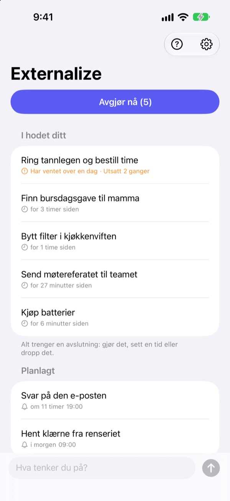
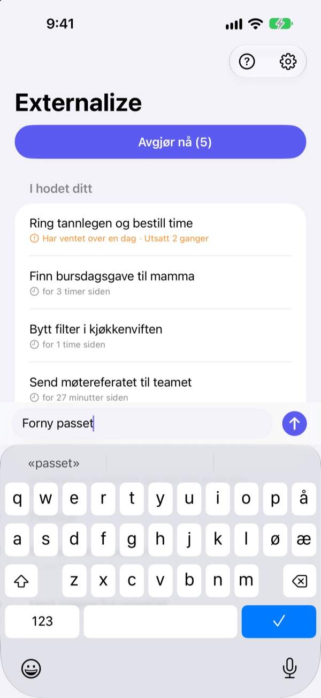
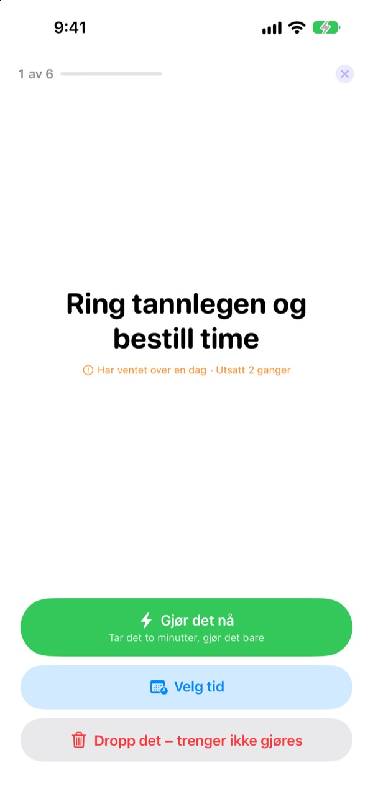
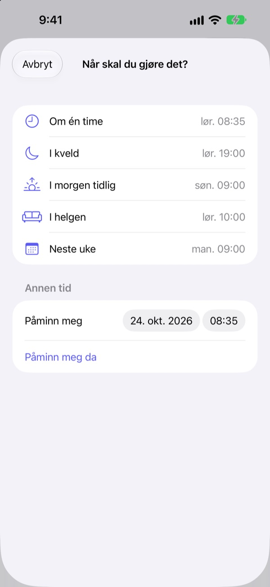

Skriv det ned nå.
Avgjør det i kveld.
«Å ja, jeg må jo …» Få det ut av hodet med noen få ord, og slipp det. Om kvelden tar du det som er igjen, én ting om gangen.
Alle funksjoner er gratis. Ingen konto, ingen innlogging.

Prøv det her
Skriv noe du går og tenker på, eller trykk på et eksempel. Trykk så på «Avgjør nå», og gi hver ting en slutt.
Selv småting tar plass i hodet
I dusjen, på rødt lys, rett før du sovner: «Det der må jeg gjøre.» Det er ingen steder å skrive det, så du holder det fast, og det du holder på med, blir lidende. Gjøremålsapper vil ha en liste og en frist først, så selv det å skrive ned blir en oppgave.
Tre sekunder, så slipper du
Åpne appen, og skriv i linjen nederst. Ingen lister, mapper eller frister.
Trykk på widgeten på låseskjermen, så åpner appen med en tom linje. Si Husk i Externalize til Siri, eller legg det på handlingsknappen, så er det lagret uten at du åpner appen.

Om kvelden, én ting om gangen
Er det noe igjen, får du én påminnelse kl. 21.00. Er alt unnagjort, skjer det ingenting.
Når du begynner, kommer tingene én om gangen, stort og tydelig. Velg «Gjør det nå», «Velg tid» eller «Dropp det», så kommer den neste. Tar det to minutter, start tidtakeren og gjør det med en gang.

Ingenting blir liggende
Velg «Om én time», «I kveld», «I morgen tidlig», «I helgen» eller «Neste uke», så kommer tingen tilbake da. Fra varselet trykker du rett på «Ferdig», «I morgen tidlig» eller «Dropp det».
Det som har ventet over et døgn, og det du utsetter gang på gang, blir markert, så du ser hva som stadig glipper.

Kom i gang i tre steg
- 1
Skriv det ned
Noen få ord i appen, i widgeten på låseskjermen eller via Siri, det som er nærmest.
- 2
Tillat varsler
Appen spør én gang, første gang du skriver noe. De brukes til kveldspåminnelsen og tidene du velger.
- 3
Avgjør om kvelden
Trykk på påminnelsen eller «Avgjør nå», og gi hver ting en slutt.
Rett fra listen
- Trykk på en ting
- velg «Ferdig», «Velg tid» eller «Dropp det»
- Sveip til høyre
- Ferdig (forsvinner fra listen)
- Sveip til venstre
- Dropp det, eller «Utsett» for å velge tid
- Avgjør nå
- gå gjennom det som er igjen, én om gangen
- Husk i Externalize
- si det til Siri uten å åpne appen
- Innstillinger ▸ Kveldspåminnelse
- endre tidspunkt eller slå av
Når du velger tid, betyr «I kveld» kl. 19.00, «I morgen tidlig» kl. 9.00, «I helgen» lørdag kl. 10.00 og «Neste uke» mandag kl. 9.00. Du kan også velge dato og klokkeslett selv.
Vanlige spørsmål
Kan jeg skrive ned noe uten å åpne appen?
Ja. Si Husk i Externalize til Siri, så spør Siri hva du vil skrive, og lagrer det. Tilordne snarveien «Skriv ned» til handlingsknappen i Innstillinger, så holder det med ett trykk.
Hvordan legger jeg til widgeten på låseskjermen?
Hold fingeren på låseskjermen, trykk på Tilpass og velg låseskjermen, trykk på widgetområdet og legg til Externalize. Ett trykk åpner en tom linje, og widgeten viser hvor mange ting som er igjen. Det finnes også en liten widget for Hjem-skjermen.
Kan jeg endre eller slå av kveldspåminnelsen?
Trykk på tannhjulet øverst til høyre ▸ Kveldspåminnelse for å endre tidspunktet eller slå den av. Den er satt til kl. 21.00 og er stille de dagene ingenting er igjen.
Jeg får ingen varsler.
Hvis innstillingene i Externalize sier at varsler er av, trykker du på knappen der og slår dem på i iPhone-innstillingene. De dagene ingenting er igjen, kommer det ingen kveldspåminnelse, og det er helt normalt.
Hvordan kommer en ting med tidspunkt tilbake?
Du får et varsel på tidspunktet du valgte. Hold fingeren på det for å velge «Ferdig», «I morgen tidlig» eller «Dropp det» med en gang. Gjør du ingenting, havner den i «I hodet ditt» igjen, og du avgjør den neste gang.
Kan jeg hente tilbake noe jeg har markert som ferdig eller droppet?
Nei. Avgjorte ting forsvinner fra listen, og det finnes ikke noe arkiv. Er du usikker, velg heller en tid enn å droppe det.
Blir tingene mine med til en ny iPhone?
Nei. Alt blir på denne enheten og sendes aldri til iCloud eller en server. Sletter du appen, forsvinner det også.
Hvilke enheter fungerer den på?
iPhone med iOS 17 eller nyere.
Spørsmål eller en feil? Skriv til mizzking75@gmail.com. Ta gjerne med iPhone-modell og iOS-versjon, så ser vi raskere på det.